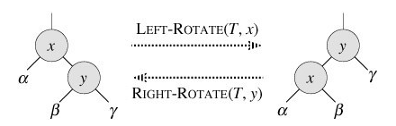
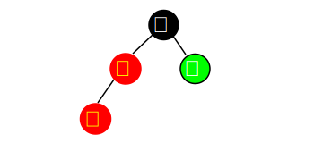
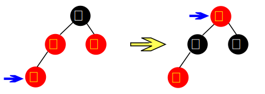

红黑树(一) ——原理
Contents
在分析内核代码的过程中，发现很多内核子系统都会使用红黑树这个查找结构，本文由浅入深的总结了红黑树这个查找结构。
本文尽可能做到浅显易懂。最后，本文会基于C语言，自己实现一个红黑树，方便大家对其理解。
红黑树介绍
红黑树由Rudolf Bayer于1972年发明，当时被称为平衡二叉B树（symmetric binary B-trees），1978年被Leonidas J. Guibas 和Robert Sedgewick改成一个比较摩登的名字：红黑树。
红黑树是每个节点都带有颜色属性的二叉查找树，颜色为红色或黑色。那既然已经有二叉查找树，为什么还需要红黑树呢？
了解过二叉查找树的同学应该都知道，随着不断的插入和删除结点，二叉查找树有可能会退化成一个长链。所以就有了AVL树的概念，目的就是在插入和删除结点时，保证查找树的平衡。而红黑树和AVL树类似，都是在进行插入和删除操作时通过特定操作保持二叉查找树的平衡，从而获得较高的查找性能。
自从红黑树出来后，AVL树就被放到了博物馆里，据说是红黑树有更好的效率，更高的统计性能。
红黑树的平衡
那红黑树其在插入和删除时是如何保证平衡呢？这得益于其几个性质。
红黑树首先是一棵二叉查找树，它每个结点都被标上了颜色（红色或黑色），红黑树满足以下5个性质：
- 每个结点的颜色只能是红色或黑色；
- 根结点是黑色的；
- 每个叶子结点都带有两个空的黑色结点（被称为黑哨兵），如果一个结点只有一个左孩子，那么其右孩子是一个黑哨兵；如果结点只有一个右孩子，那么其左孩子是一个黑哨兵。
- 如果一个结点是红的，则它的两个儿子都是黑的。也就是说在一条路径上不能出现相邻的两个红色结点。
- 对于每个结点来说，从该结点到其子孙叶结点的所有路径上包含相同数目的黑结点。
如下图所示，即是一颗红黑树（来自：https://en.wikipedia.org/wiki/Red%E2%80%93black_tree）

有了如上5个性质的保证：红黑树在最坏的情况下基本动态集合操作的时间复杂度为O(nlgn)。
注意：下文中不定时会复习一下这5个特性，因为它太重要了。
定义红黑树的结构体
为了方便的进行讨论，我们根据如上红黑树的特性，定义了红黑树节点的数据结构，如下：
|
|
结点的基本操作
寻找parent、grandparent、slibing、uncle等
这些基本操作比较简单，具体代码如下：
|
|
中序遍历
中序遍历，即按照关键字的从小到大的顺序。
|
|
旋转
插入和删除过程中都会有破坏红黑树性质的情况发生，为了维护这些性质，必须要改变树中某些结点的颜色和指针结构。指针结构的修改是通过旋转来完成的，旋转被分为左旋和右旋；在插入和删除操作中这两个操作会多次出现，我们先来分析一下这两个操作:

左旋
|
|
右旋
右旋代码跟左旋代码对称，这里就不贴出来了。
红黑树的插入
在讨论红黑树的插入操作之前必须要明白，任何一个即将插入的新结点的初始颜色都为红色。这一点很容易理解，因为插入黑点会增加某条路径上黑结点的数目，从而导致整棵树黑高度的不平衡。但如果新结点父结点为红色时（如下图所示），将会违返红黑树性质：一条路径上不能出现相邻的两个红色结点。这时就需要通过一系列操作来使红黑树保持平衡。

为了清楚地表示插入操作以下在结点中使用新字表示一个新插入的结点；使用父字表示新插入点的父结点；使用叔字表示父结点的兄弟结点；使用祖字表示父结点的父结点。插入操作分为以下几种情况：
（0）插入的节点为根节点
由于直接插入的结点为红色，所以需要将该结点修改为黑色，才能满足红黑树的性质。
（1）插入的节点的父节点为黑色
如果新点的父结点为黑色结点，那么插入一个红点将不会影响红黑树的平衡，此时插入操作完成。红黑树比AVL树优秀的地方之一在于黑父的情况比较常见，从而使红黑树需要旋转的几率相对AVL树来说会少一些。
（2）插入的节点的父节点为红色
如果新点的父结点为红色，这时就需要进行一系列操作以保证整棵树红黑性质。如图所示，由于父结点为红色，此时可以判定，祖父结点必定为黑色。这时需要根据叔父结点的颜色来决定做什么样的操作。青色结点表示颜色未知。由于有可能需要根结点到新点的路径上进行多次旋转操作，而每次进行不平衡判断的起始点（我们可将其视为新点）都不一样。所以我们在此使用一个蓝色箭头指向这个起始点，并称之为判定点。

（2.1）插入的节点的父节点为红色，叔叔节点为红色
当叔父结点为红色时，如图所示，无需进行旋转操作，只要将父和叔结点变为黑色，将祖父结点变为红色即可。但由于祖父结点的父结点有可能为红色，从而违反红黑树性质。此时必须将祖父结点作为新的判定点继续向上进行平衡操作。

需要注意，无论“父”在“叔”的左边还是右边，无论“新”是“父”的左孩子还是右孩子，它们的操作都完全一样。
（2.2）插入的节点的父节点为红色，叔叔节点为黑色
当叔父结点为黑色时，需要进行旋转，以下图示了所有的旋转可能
情形1

父结点变成黑色，祖结点变成红色，将祖节点向右旋转一次
情形2

将父节点向左旋转一次，转化为情形1
情形3

将父节点变成黑色，祖结点变成红色，将祖节点向左旋转一次
情形4

将父节点向右旋转一次，转化为情形3
可以观察到，当旋转完成后，新的旋转根全部为黑色，此时不需要再向上回溯进行平衡操作，插入操作完成。需要注意，上面四张图的叔、1、2、3结点有可能为黑哨兵结点。
其实红黑树的插入操作不是很难，甚至比AVL树的插入操作还更简单些。但删除操作就远远比AVL树复杂得多，下面就介绍红黑树的删除操作
红黑树的删除
红黑树本身是一棵二叉查找树，它的删除和二叉查找树的删除类似。
首先要找到真正的删除点，分为两种情况：
- 删除结点只有左孩子或者只有右孩子：此时真正的删除结点就是要删除的结点。
- 删除结点存在左孩子和右孩子：真正的删除点应该是中序遍历的前驱，即左孩子中最大的结点，或者是中序遍历的前驱的后继，即有孩子的最大结点。如下图所示，当删除结点20时，实际被删除的结点应该为18，结点20的数据变为18（此例子找的是中序遍历的前驱）。

所以可以推断出，在进行删除操作时，真正的删除点要么是只有一个孩子，要么是叶子结点。而根据红黑树的性质可以得出以下两个结论：
- 真正被删除的结点必定是只有一个红色孩子或没有孩子的结点
- 如果真正的删除点是一个红色结点，那么它必定是一个叶子结点。
第1点很好理解吧，删除结点的中序遍历的前驱或者后继结点肯定只有一个孩子或者没有孩子的结点，如果有一个孩子的话，且为孩子的结点为黑色，则违反了红黑树的性质5，所以孩子结点的颜色必为红色。
对于第2点，如果真正删除结点是红色的，且不是叶子结点，那它必须有一个黑色的孩子结点，此时会违反红黑树的性质5.
复习一下：
红黑树必须满足以下5个性质：
- 每个结点的颜色只能是红色或黑色；
- 根结点是黑色的；
- 每个叶子结点都带有两个空的黑色结点（被称为黑哨兵），如果一个结点只有一个左孩子，那么其右孩子是一个黑哨兵；如果结点只有一个右孩子，那么其左孩子是一个黑哨兵。
- 如果一个结点是红的，则它的两个儿子都是黑的。也就是说在一条路径上不能出现相邻的两个红色结点。
- 对于每个结点来说，从该结点到其子孙叶结点的所有路径上包含相同数目的黑结点。
在以下讨论中，我们使用蓝色箭头表示真正的删除点，它也是旋转操作过程中的第一个判定点；真正的删除点使用旧标注，旧点所在位置将被它的的孩子结点所取代（最多只有一个孩子），我们使用新表示旧点的孩子结点。删除操作可分为以下几种情形：
旧结点为红色结点
若旧结点为红色结点，则它必定是叶子结点，直接删除即可。如图所示

旧结点为黑色结点，新结点为红色结点
当旧点为黑色结点，新点为红色结点时，将新点取代旧点位置后，将新点染成黑色即可（如图所示）。 这里需要注意：（1）旧点为红色，新点为黑色的情况不可能存在；（2）父结点的颜色随意。

旧结点和新结点都为黑色
此时由于新节点为NIL，否则就不满足红黑树的性质5。
此时即要删除的结点为黑色，且为叶子结点。这时情况比较复杂，需要根据旧点兄弟结点的颜色来决定进行什么样的操作。我们使用兄来表示旧点的兄弟结点。这里可分为红兄和黑兄两种情况：
兄弟结点为红色
由于兄弟结点为红色，所以父结点必定为黑色，而旧点被删除后，新点取代了它的位置。下图演示了两种可能的情况：

灰色的新其实代表LEAF结点，但其有一重黑色。
红兄的情况需要进行RR或LL型旋转，然后将父结点染成红色，兄结点染成黑色。然后重新以新点为判定点进行平衡操作。我们可以观察到，旋转操作完成后，判定点没有向上回溯，而是降低了一层，此时变成了黑兄的情况。
兄弟结点为黑色
黑兄的情况最为复杂，需要根据黑兄孩子结点（这里用侄表示）和父亲结点的颜色来决定做什么样的操作。
黑兄二黑侄红父
如图所示，这种情况比较简单，只需将父结点变为黑色，兄结点变为红色，新结点变为黑色即可，删除操作到此结束。

黑兄二黑侄黑父
如图所示，此时将父结点染成新结点的颜色，新结点染成黑色，兄结点染成红色即可。当新结点为红色时，父结点被染成红色，此时需要以父结点为判定点继续向上进行平衡操作。

黑兄红侄
黑兄红侄有以下四种情形，下面分别进行图示：
情形1：

处理方式：兄弟结点变成父节点的颜色，父结点变成黑色，侄子结点变成黑色，父结点右旋转。
情形2

处理方式：兄弟结点变成红色，右侄子变成黑色，兄弟结点左旋转，变成情形1.
情形3：
 处理方式：兄弟结点变成父节点的颜色，父结点变成黑色，侄子结点变成黑色，父结点左旋转。
处理方式：兄弟结点变成父节点的颜色，父结点变成黑色，侄子结点变成黑色，父结点左旋转。
情形4：

处理方式：兄弟结点变成红色的，左侄子结点变成黑色的，兄弟结点右旋转。变成情形3.
由以上图例所示，看完以上四张图的兄弟有可能会有一个疑问，如果情形1和情形2中的两个侄子结点都为红色时，是该进行LL旋转还是进行LR旋转呢？答案是进行LL旋转。情形3和情形4则是优先进行RR旋转的判定。
代码
-
基于本文的思路，我实现了一个C语言版本的红黑树，地址为：https://github.com/0x0916/rbtree/tree/master/rbtree_1
-
另外，我也基于算法导论中的思路，实现了一个C语言的版本的红黑树，地址为：https://github.com/0x0916/rbtree/tree/master/rbtree_2